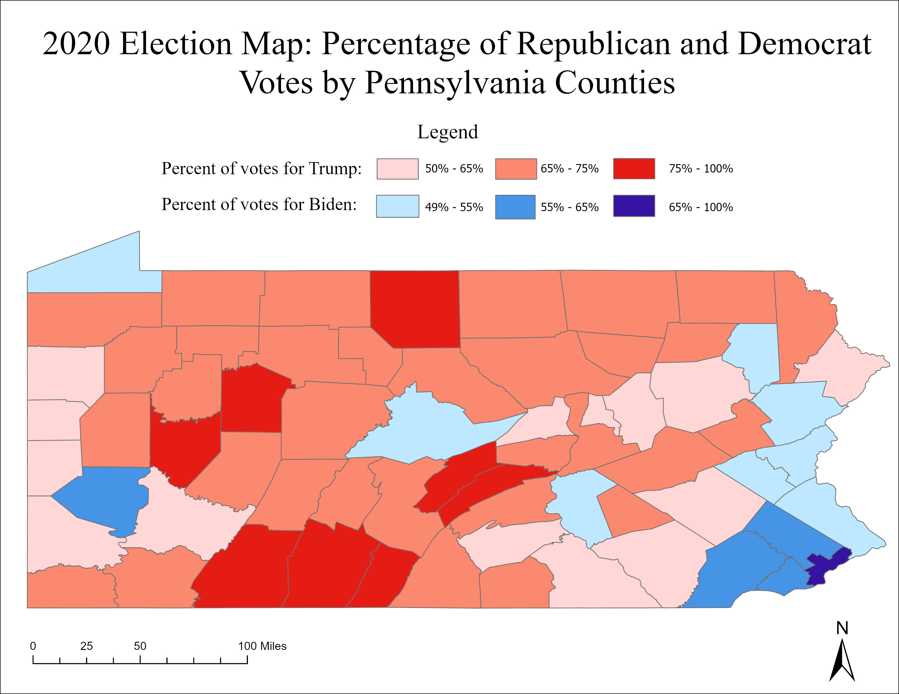

2020 Election Map: Percentage of Democratic and Republican Votes by PA Counties
Narrative: How I solved the problem
This map solves the problem of presenting the results of the 2020 presidential election in each Pennsylvania county. This choropleth map uses color to convey which candidate received the majority vote in each county, and the percentage of votes for that candidate. I joined the Pennsylvania voting data with the Pennsylvania counties polygon, and created a new shapefile. I selected by attribute in order to find the counties in which Biden received 49%+ of the vote, and those in which Trump received 50%+ of the vote, and exported those selections into their own shapefiles. I moved those layers to the top, and selected graduated colors and blue and red (respectively) in the symbology pane. I used a manual interval and edited the labels to associate each color with a certain range of percentage of votes. I also utilized the advanced symbology options to change the category from “numeric” to “percentage”.
Tools
Some primary tools I used include: +Join +Export features +Select by attribute +Symbology: edit labels, graduated colors, manual interval.